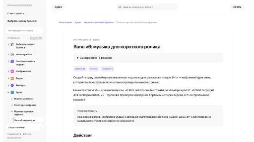

P
Podwise AIСуммаризация
«Podwise AI» преобразует речевую запись в письменный материал.
Раздел «Музыка и аудио»: варианты ИИ для этой задачи, описания возможностей и переходы к обзорам. Сравните несколько решений на одинаковом примере.
Подготовьте спокойную музыкальную подложку к рассказу о собственном изделии. Опишите настроение и инструменты, затем прослушайте весь результат вместе с пробной речью; сравнивайте слышимость слов и переходы в начале, середине и конце, прежде чем выбирать фрагмент.
Создай спокойную инструментальную подложку для рассказа о деревянном органайзере: мягкая гитара, лёгкие клавишные, ровный темп. Без вокала и резких переходов; музыка должна оставлять пространство для объяснения деталей.

«Podwise AI» преобразует речевую запись в письменный материал.
«SFX Engine» представлен в разделе «Музыка и аудио». При выборе проверьте нужную операцию и условия работы с результатом.
Для «Song Name Generator» сначала определите свою задачу и требуемый результат. Карточка относится к направлению «Музыка и аудио».
«Story321 Music AI» подготавливает музыкальные варианты по заданию.
Сравнивать «TalkNotes» с другими инструментами раздела «Музыка и аудио» удобнее на одинаковом исходном материале.
«A.V. Mapping» помогает искать композиции с подходящим характером звучания.
Для «AI Music API» сначала определите свою задачу и требуемый результат. Карточка относится к направлению «Музыка и аудио».
«AI Song Generator» подготавливает музыкальные варианты по заданию.
Сравнивать «AudioKit» с другими инструментами раздела «Музыка и аудио» удобнее на одинаковом исходном материале.
«Barrs AI» готовит текстовый черновик по условиям задачи.
«Hance.ai» представлен в разделе «Музыка и аудио». При выборе проверьте нужную операцию и условия работы с результатом.
Сравнивать «Harmonai» с другими инструментами раздела «Музыка и аудио» удобнее на одинаковом исходном материале.
«Mastermallow» подготавливает музыкальные варианты по заданию.
Сравнивать «MIDIGEN» с другими инструментами раздела «Музыка и аудио» удобнее на одинаковом исходном материале.
Для «Moodplaylist : AI Powered Playlists» сначала определите свою задачу и требуемый результат. Карточка относится к направлению «Музыка и аудио».
Сравнивать «MyMP3» с другими инструментами раздела «Музыка и аудио» удобнее на одинаковом исходном материале.
Для «Poddy.ai» сначала определите свою задачу и требуемый результат. Карточка относится к направлению «Музыка и аудио».
«Rapli : AI Rap Generator» подготавливает музыкальные варианты по заданию.
Сравнивать «Recast» с другими инструментами раздела «Создание контента» удобнее на одинаковом исходном материале.
«Riffusion» подготавливает музыкальные варианты по заданию.
Сравнивать «SongGenerator.io» с другими инструментами раздела «Создание контента» удобнее на одинаковом исходном материале.
«Splitter AI» разделяет голосовую и инструментальные части записи.
Сравнивать «Stem Distribution» с другими инструментами раздела «Музыка и аудио» удобнее на одинаковом исходном материале.
«VocalRemover.co» представлен в разделе «Музыка и аудио». При выборе проверьте нужную операцию и условия работы с результатом.
Сравнивать «AI Cover Generator» с другими инструментами раздела «Музыка и аудио» удобнее на одинаковом исходном материале.
Для «AI Drum Generator» сначала определите свою задачу и требуемый результат. Карточка относится к направлению «Музыка и аудио».
«AIMusics.Net» подготавливает музыкальные варианты по заданию.
«Concert Creator» представлен в разделе «Аудио (голос и музыка)». При выборе проверьте нужную операцию и условия работы с результатом.
«Delphos» представлен в разделе «Музыка и аудио». При выборе проверьте нужную операцию и условия работы с результатом.
«Koolio AI» преобразует речевую запись в письменный материал. Дополнительно «Koolio AI» превращает материал в основу подкаста.

LALAL.AI разделяет вокал и инструментальные составляющие аудио с помощью ИИ. Обработка также предусмотрена для звуковых дорожек видео, а отдельные средства направлены на удаление помех и нежелательных звуков. Для включения этих операций в другие сервисы у продукта описан программный интерфейс.
Для «Listener.fm» сначала определите свою задачу и требуемый результат. Карточка относится к направлению «Музыка и аудио».
MicroMusic Replicate использует короткий звуковой образец для создания пресета Vital или Serum. Пользователь выбирает тип звука и проверяет получившуюся настройку в своей DAW. На странице также представлено выделение отдельных составляющих аудио. Сравните тембр с исходником и послушайте, как он работает в контексте вашей партии.
Сравнивать «Mood2Music» с другими инструментами раздела «Музыка и аудио» удобнее на одинаковом исходном материале.
«Musajjel» превращает материал в основу подкаста.
«Output» подготавливает музыкальные варианты по заданию.
«Podcastle» представлен в разделе «Видео». При выборе проверьте нужную операцию и условия работы с результатом.
«Podcustom» превращает материал в основу подкаста.
«Songmeaning» представлен в разделе «Тексты и контент». При выборе проверьте нужную операцию и условия работы с результатом.
«Soundful» подготавливает музыкальные варианты по заданию.
«Sounds.Studio» подготавливает музыкальные варианты по заданию.
«Suno AI SunoAI.ai» подготавливает музыкальные варианты по заданию.
«Syndy» превращает материал в основу подкаста.
«AuthorsVoice.AI» представлен в разделе «Музыка и аудио». При выборе проверьте нужную операцию и условия работы с результатом.
«BeyondWords» представлен в разделе «Музыка и аудио». При выборе проверьте нужную операцию и условия работы с результатом.
«Binaural Beats Factory» представлен в разделе «Аудио (голос и музыка)». При выборе проверьте нужную операцию и условия работы с результатом.
Для «Chord» сначала определите свою задачу и требуемый результат. Карточка относится к направлению «Музыка и аудио».
Для «FlowTunes» сначала определите свою задачу и требуемый результат. Карточка относится к направлению «Музыка и аудио».
Страница 4 из 6